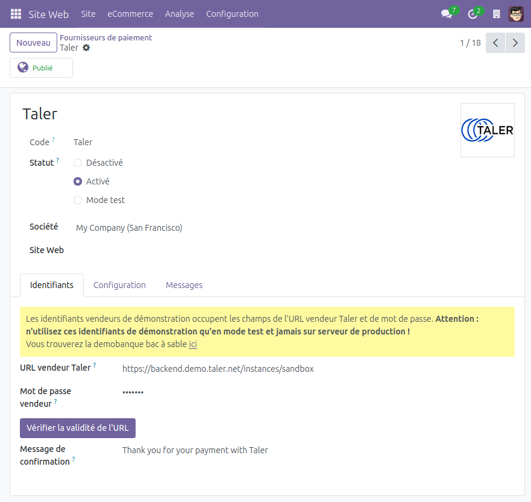

Configuration¶
Configuration du mode de paiement Taler¶
Une fois que l’add-on est installé depuis le menu Apps :
rendez-vous dans le menu de fournisseurs de paiement. Il est accessible de plusieurs manières :
Site Web -> Configuration -> eCommerce -> Fournisseurs de paiement.Facturation -> Configuration -> Paiements en ligne -> Fournisseurs de paiement.
Quelle que soit la manière dont vous y accédez, cette page comprend la liste des fournisseurs de paiement actuellement disponibles.
Un nouveau fournisseur de paiement
Talery figurera, désactivé dans un premier temps.Cliquez sur le fournisseur de paiement Taler.
Insérez l’URL vendeur Taler dans l’onglet
Identifiants.Par défaut, les identifiants de la démobanque sont utilisés. Accédez ici à la démobanque.
Après avoir coniguré l’URL, vous pouvez cliquer sur le bouton
Vérifier la validité de l'URLpour vous assurer qu’il se connecte à un vendeur Taler valide et que les devises que celui-ci accepte soient compatibles avec vos paramètres Taler.Pour voir les devises configurées dans Taler, rendez-vous dans l’onglet
Configuration.
Configurez ensuite le mot de passe vendeur Taler. Il sera utilisé pour les échanges API avec le vendeur.
Vous pouvez également changer le message de confirmation Taler. Celui-ci sera affiché dans les transactions Taler.
Ce changement ne s’appliquera que dans les commandes Taler, et pas dans Odoo.
Pour changer le message de confirmation Odoo pour la clientèle qui paye avec Taler, rendez-vous dans l’onglet
Messages.
Les valeurs défaut sont reliées au vendeur Taler bac à sable :
Mot de passe : sandbox
Il est recommandé, mais non nécessaire, de créer un Jounal spécifique à Taler (cela peut-être paramétré dans l’onglet
Configuration).Cela facilitera le processus de Comptabilité.
Cliquez le bouton d’option
Activé.
Le paramétrage initial est maintenant terminé et les paiements Taler seront disponibles pour eCommerce, pour les paiements en ligne et pour les apps de facturation.
{kind=link}
